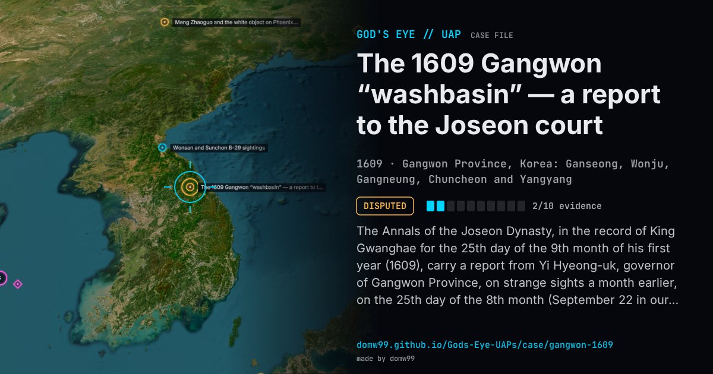

The 1609 Gangwon “washbasin” — a report to the Joseon court

The Annals of the Joseon Dynasty, in the record of King Gwanghae for the 25th day of the 9th month of his first year (1609), carry a report from Yi Hyeong-uk, governor of Gangwon Province, on strange sights a month earlier, on the 25th day of the 8th month (September 22 in our calendar). At Gangneung in the late morning a gourd-shaped object with a pointed top appeared, glowed deep red, left a white trail and was followed by a sound like thunder; at Ganseong smoke-like shapes moved from north to south; at Chuncheon around midday a fiery light shaped like a jar sped north, trailing blue-white smoke, with thunder and drum-like sounds. At Yangyang in the early afternoon a round, shining thing like a washbasin appeared near the courtyard of the official Kim Mun-wi, rose, changed colour, split in two and vanished with a noise like thunder. Collecting the reports from the counties took more than a month.
Explanation
The descriptions (a bright body seen from towns far apart in the same hours, a glowing trail and lingering smoke, then sounds like thunder and drums) are what a large daylight fireball, a bolide breaking up with sonic booms, looks and sounds like. Korean journalists and historians who cite the record give both readings, a UFO or a meteor, and nothing settles it beyond the text itself.
What was seen
Shape: A round object “like a washbasin” at Yangyang; a gourd, a jar, a red ship or a halo elsewhere; with smoke trails
Witnesses: Officials and residents of five towns, as reported by the provincial governor Yi Hyeong-uk; at Yangyang a local official, Kim Mun-wi, saw it closest
Duration: From late morning to early afternoon, by the reports
Sources
- Kyunghyang Shinmun, “Joseon-era UFO … the Annals of the Joseon Dynasty” (2016, in Korean)
- Seoul Shinmun, “In the first year of Gwanghae, a washbasin-shaped flying object rose into the sky” (2010, in Korean)